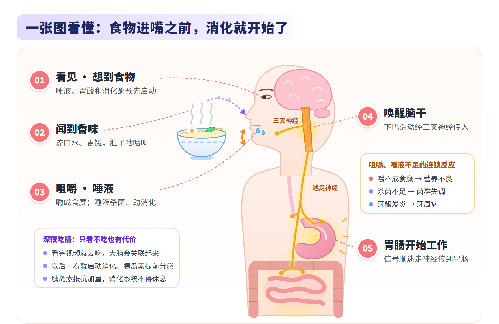
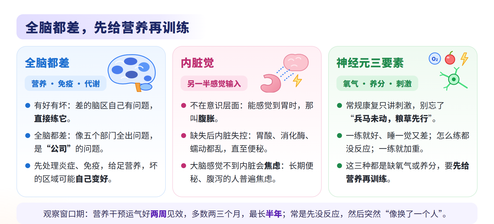
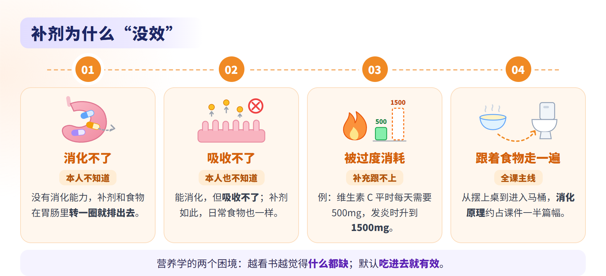
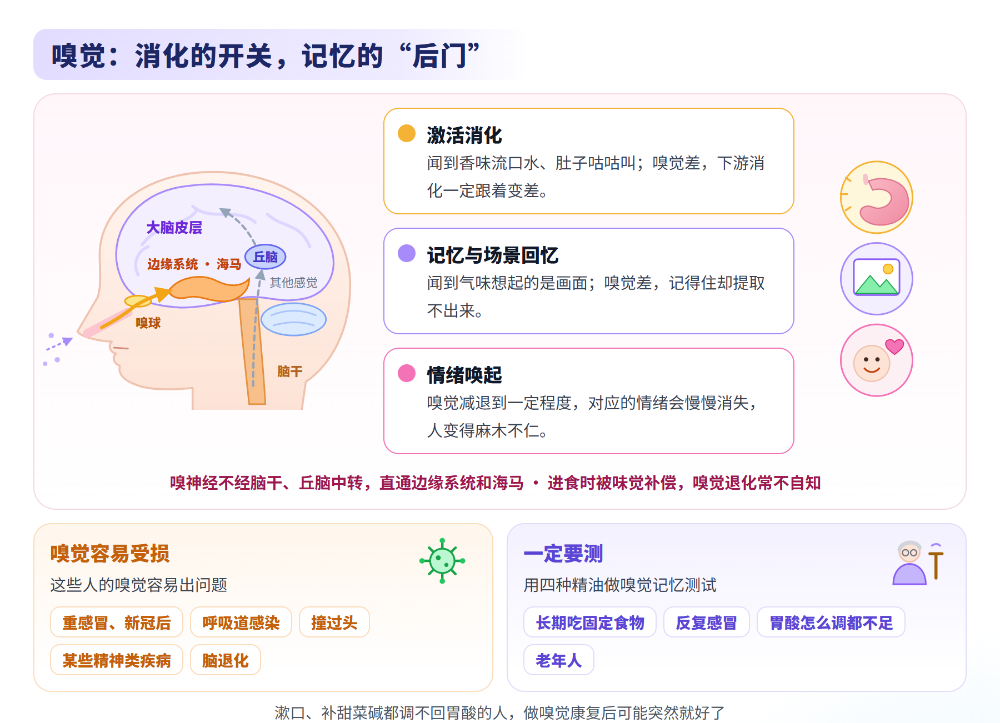
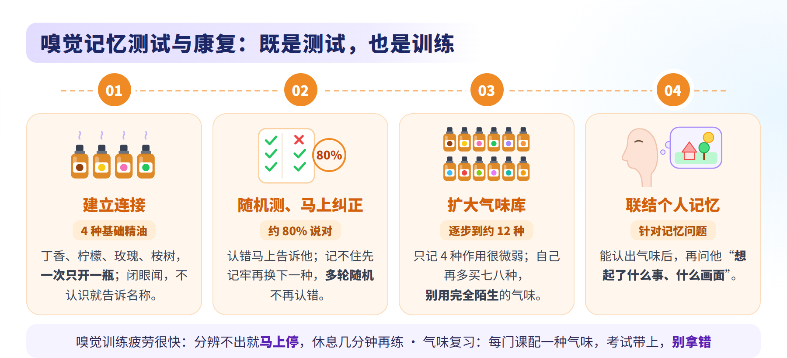
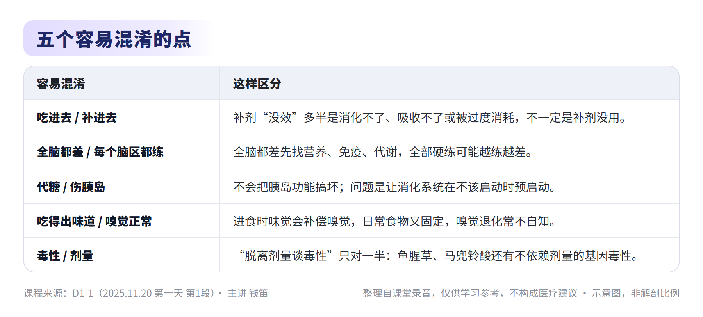
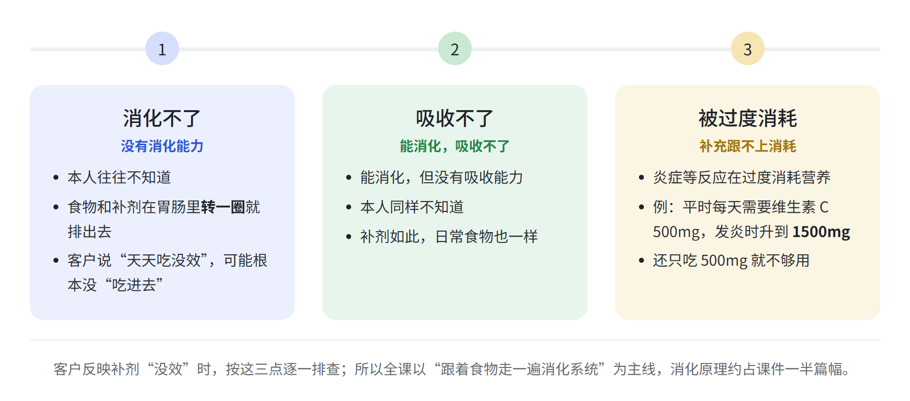
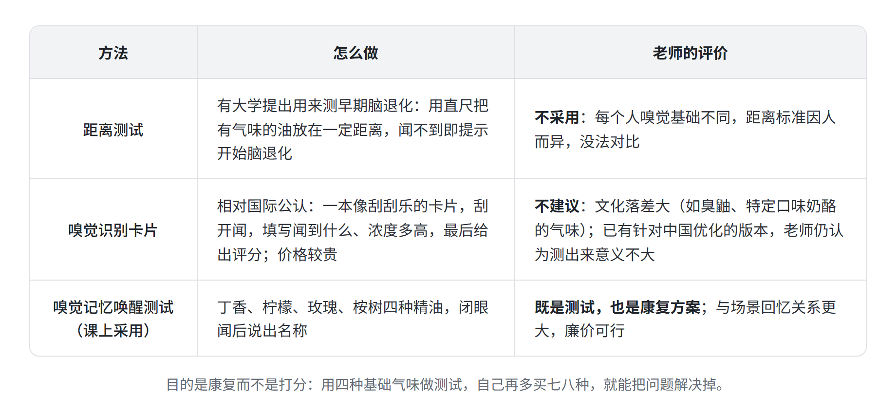
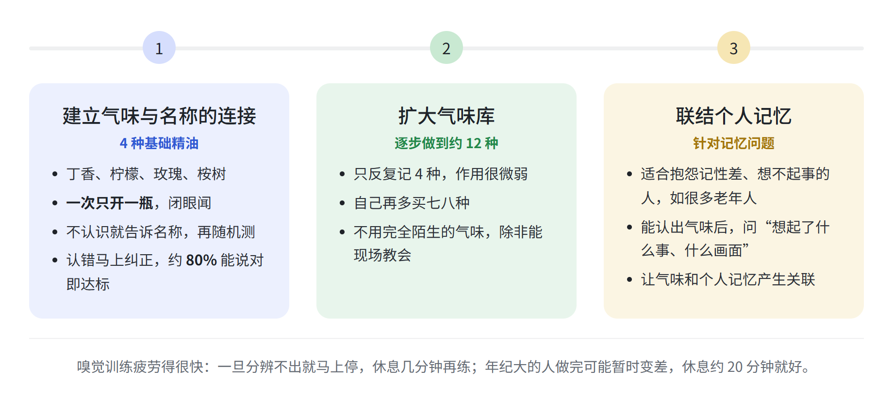

脑营养学 · 第一天 第1段
主题：全局因素（营养、免疫、代谢）与大脑、内脏觉、补剂为什么“没效”、消化的起点、嗅觉与记忆
主讲：钱笛 ｜ 日期：2025 年 11 月 20 日（周四） ｜ 时长：2 小时 45 分 33 秒
本纪要整理自课堂录音，仅供学习参考，不构成医疗建议。






总结
本段是第一天的第一段。老师从“营养为什么见效慢、补剂为什么常常没效”讲起，先搭好全课框架：营养、免疫、代谢是影响全脑的全局因素，神经元要先有氧气和养分才练得动；接着讲被忽略的内脏觉，再由补剂无效的三个原因引出全课主线“跟着食物走一遍消化系统”，依次讲消化的预启动、咀嚼与唾液，最后讲嗅觉，带大家做了嗅觉记忆测试与康复实操。内容如下：
- 课程定位与基本观点
- 营养干预的特点
- 见效慢的两个原因：不知道对象体内对应的营养素处于什么状态，也不知道他能不能吸收、代谢所补的补剂，所以营养不像神经调节那样当下见效；第二版因此加入了很多内科学检查和临床查体类的实操。
- 贴近前沿，不断更新：一项临床技术从提出、验证到用于临床要几十年，“经过时间验证”也意味着相对落后；营养学更前沿，课上的内容将来可能被新文献修正。
- 自己学会判断：补剂品牌好不好要自己试、自己判断，课上教的是判断方法，不替人看具体品牌和化验单。
- 老师的补剂经历与草药风险
- 亲身经历：老师曾是严重的偏头痛患者，解决偏头痛后仍长期昏昏沉沉；连续半年多每天吞二三十颗补剂后，有一天突然“像从梦里醒过来”。两张相隔十多年的工作照里，早的那张反而双眼聚焦不一致、上眼睑下垂，看起来更老。
- 草药是混合物：除喝酒外，国内对肝肾影响最大的是滥用中药，煲汤里加大量草药、喝凉茶是重要原因；课上介绍的草药，老师都亲自吃过、查过文献，确认能代谢掉。
- 不依赖剂量的毒性：“脱离剂量谈毒性就是耍流氓”只对一半，鱼腥草、马兜铃酸还会直接诱发基因变异，每吃一次就像“抽一次奖”；所以优先选成分明确的纯净物，而不是草药混合物。
- 营养的基本概念
- 工厂比喻：宏量营养（碳水、蛋白质、脂肪）像给工厂持续供电，微量营养（各种维生素等）像原材料和生产线零件，有电没零件，生产线照样转不起来。
- 人人都在缺：没有谁体内的营养素全部充足；缺营养时身体先把资源送给维持生存的器官，克扣其他部分，于是出现精神状态、身体功能和大脑功能的问题。
- 学员分享：一位学员荨麻疹七八年，服维生素 D、锌、镁等约一年后一两年没发作；补钙和维生素 D 的骨质疏松病人多反馈疼痛缓解，却从没有人骨质疏松变好，老师认为是“没有几个人补进去”。
- 营养干预的特点
- 全局因素：营养、免疫、代谢
- 全脑都差，先找全局原因
- 读脑功能测试图：蓝、深蓝表示功能差，红、黄表示功能好，白色是平均水平。
- 公司比喻：五个部门里两个出问题，是这两个部门自己的问题；五个部门全出问题，是公司管理的问题。全脑都差，一定有营养、免疫、代谢这类影响全局的因素。
- 处理原则：这时全部都练，可能越练越差、他扛不住；先解决炎症和免疫问题、给足营养支持，坏掉的区域可能自己开始变好。新冠后很多人记忆变差、“整个人垮掉”，也是炎症激活免疫系统让全脑掉下来。
- 大脑状态是动态的：一场感冒、一次拉肚子、手术中大量失血，都可能让大脑从很好掉到很差；全身器官是大脑的“后勤部”，不要把大脑当成独立的器官。
- 一生中拖垮大脑的因素
- 孕期：孕妇营养不足，胎儿必然营养不良；住在高架桥边（噪音、尾气）、孕妇的情绪压力、母亲孕期甲减，都会增加胎儿脑发育迟缓的风险。
- 成年后：情绪和生存压力，抽烟、喝酒、烫头等化学毒素，失眠、尾气、偏食，再加上贫穷、感染等，层层给大脑加码；补剂的作用就是及时补上这些漏洞。
- 补剂的局限：补剂不能让人不得神经退化性疾病和肿瘤，它们是寿命延长后基因变异长期积累的结果；能做的是让它晚一点来、来得不那么剧烈。
- 孕期营养素与毒素
- 鱼油（长链不饱和脂肪酸）：母体摄入不足时，先拿到材料的脑细胞先长，宏观上表现为胎儿额叶皮层厚度不够。
- 叶酸与维生素 B12：缺乏可致神经管发育缺陷；神经管在怀孕前三周已基本长成，必须在备孕时就补。
- 铁与葡萄糖：母亲缺铁，胎儿神经纤维分化不完整；孕妇长期低血糖，胎儿全身发育都受影响。
- 铅：脑发育迟缓的孩子，尤其 ADHD，一定要关注血铅；轻度超标每次都克扣一点大脑发育，最容易被忽略。各资料、各机构的超标标准不一，课上提到的参考数值见课件。
- 酒精、烟草、咖啡因：酒精对人没有安全剂量，“小酌怡情”不成立；烟草致癌的主要是焦油里成分复杂的物质；孕期咖啡因摄入超标，会让胎盘血流减缓、胎儿轻微缺氧。
- 甲状腺：问题极其高发，常被放任不管；有甲减、桥本等问题的人，要先处理到一定程度再备孕。
- 全脑都差，先找全局原因
- 内脏觉与神经元：先给营养，再做训练
- 内脏觉：被忽略的另一半感觉输入
- 不在意识层面：感觉输入一半是躯体感觉，另一半是内脏感觉；闭上眼睛感觉不到胃和胆囊，能感觉到胃的时候，那叫腹胀。
- 缺失的两类后果：一是内脏失控，不知道该放多少胃酸、消化酶，蠕动、吸收和结肠吸水都乱了，直至便秘；二是精神问题，长期便秘或腹泻的人普遍严重焦虑，“十个便秘九个疯”。
- 通路：内脏感觉更多传入岛叶，并经迷走神经传到脑干的孤束核，再进入边缘系统，所以饿了会心情差、发慌。
- 食物是最典型的输入：胃肠功能正常时，吃进正确的食物，就是在告诉大脑内脏在哪里、该怎么工作。
- 从细胞层面看康复
- 化学传递：神经细胞内部是放电，细胞之间要把神经递质打包传过去，需要大量营养物质支持；1 立方毫米脑组织就有约 57000 个细胞、约 150 米长的连接。
- 细胞膜：鱼油（DHA）的很多好处、很多免疫问题，都发生在细胞膜上。
- 站在细胞的角度：课上播放了科普片《细胞内部的世界》，建立分子层面的立体概念，才能理解吃进去的东西去了哪里，也才能自己判断“要练多久、练多少下”。
- 神经元三要素：氧气、养分、适宜的刺激；常规康复只讨论刺激，缺了“兵马未动，粮草先行”这一环。
- “练不动”的客户与观察期
- 三种表现：一练就好、睡一觉又差；怎么练都没反应，像打在棉花上；一做训练或检查症状就加重。本质是神经元缺氧气或养分、“虚不受补”，要先给足营养支持再训练。
- 观察窗口期：神经调节即刻起效，营养要把缺口补回来需要过程；运气好两周有改善，多数两三个月，最长半年。常是先毫无反应，然后突然“像换了一个人”，不要因为短期没效就放弃。
- 训练成果会白费：大脑练好了，回去缺氧、养分跟不上，或有自体免疫、再次发炎，成果可能白费。
- 内脏觉：被忽略的另一半感觉输入
- 补剂“没效”与消化的起点
- 补剂为什么“没效”
- 两个困境：一是越看营养书越觉得什么都缺，补剂越吃越多，最后分不清到底缺什么；二是默认吃进去就有效。
- 三个原因：消化不了、吸收不了、被炎症等过度消耗，本人往往都不知道；例如发炎时维生素 C 的需求从每天 500mg 升到 1500mg，仍只吃 500mg 就跟不上。
- 膳食指南偏保守：照着吃往往吃不出效果，而且有的数字标错了三十几年没改。
- 全课主线：跟着食物把消化系统走一遍，从摆上桌一直到进入马桶，是两天课程最重要的部分；消化原理约占课件一半篇幅。
- 消化从看见食物开始
- 预启动：看见、想到、闻到食物，唾液腺就开始分泌，少量胃酸、消化酶也预先启动，和巴甫洛夫的狗同理。
- 深夜吃播：看完视频就去吃，大脑会把两件事关联起来；以后一看视频就启动消化、胰岛素提前分泌，胰岛素抵抗越来越重，消化系统得不到休息，只看不吃也有代价。
- 代糖：确定不会把胰岛功能搞坏；是否引起胰岛素抵抗目前没有证据，但它让消化系统在不该启动时预启动，给整个消化系统增加负担。
- 咀嚼与唾液：消化的第一关
- 咀嚼是第一关：这一关没过，后面都谈不上；嚼不够，胃里形成不了食糜，无法和胃酸充分混合。工作忙、吃饭快，咀嚼不足常被忽视，大部分人的营养不良从这里来。
- 唤醒下游：大脑皮层上牙齿、舌头、下巴的区域与肠道等内脏相邻；下巴活动经三叉神经让脑干兴奋，连带孤束核、迷走神经运动核，下游消化道开始工作。
- 唾液是杀菌和免疫的第一关：淀粉的消化很多从唾液开始；唾液里的少量蛋白酶主要用来化掉一部分细菌，所以嘴唇干裂时不要舔，越舔越破。
- 一串连锁反应：唾液不足，牙龈发炎、萎缩成牙周病，咀嚼更差；菌群失调风险大增，细菌在口腔没被杀死、胃酸又不足，到小肠容易存活，与小肠细菌过度生长有关。
- 补剂为什么“没效”

- 嗅觉：消化的开关与记忆的“后门”
- 嗅觉为什么重要
- 激活消化：闻到香味会流口水、更饿、肚子咕咕叫；嗅觉差，在唤起消化这一步就已出错，下游消化一定跟着变差。
- 直通边缘系统：12 对颅神经里只有嗅神经不经脑干神经核、丘脑中转，直接进入边缘系统和海马，相当于大脑开在外面的“后门”。
- 拖累记忆提取：嗅觉变差，记忆唤醒跟着变差，记得住却拿不出来；再往后，海马等记忆相关区域会退化得更快。
- 场景回忆与情绪：闻到气味想起的是场景和画面，不是香水牌子或背过的书，这是进化留下的保命技能；嗅觉减退到一定程度，情绪也会慢慢消失，人变得麻木。
- 为什么难察觉，哪些人要测
- 难察觉：进食时味觉补偿了嗅觉，鼻后嗅觉（气味从咽喉后部返回鼻腔）让二者混在一起；日常吃的东西又固定，所以以为自己嗅觉正常。
- 容易受损：重感冒或新冠后，严重感染、呼吸道感染，撞过头（可撞断鼻腔里的嗅丝），某些精神类疾病，脑退化的人。
- 需要测：长期吃固定食物的人；反复感冒、以为嗅觉已经恢复的人；用了很多手段胃酸仍然不足的人；老年人一定要测。
- 消化的最后一环：有的人漱口就好，有的人补甜菜碱胃酸就够了，两样都不行的，做嗅觉康复后可能突然就好了。
- 嗅觉为什么重要

- 嗅觉记忆测试与康复
- 测试兼康复：三步走
- 建立连接：四瓶精油（丁香、柠檬、玫瑰、桉树），两人一组，一次只开一瓶，闭眼闻、说名称；不认识就告诉他，记住后随机测，约 80% 能说对为达标。
- 扩大气味库：只记四种作用很微弱，自己再多买七八种，逐步做到约 12 种；不要用对方完全没闻过的气味。
- 联结个人记忆：针对抱怨记性不好的人，能认出气味后，再问他“想起了什么事、什么画面”，让气味和他的记忆产生关联。
- 操作细节
- 疲劳很快：嗅觉一启动就在记忆库里搜寻，比其他训练更容易疲劳；一旦分辨不出就马上停，休息几分钟再练。
- 认错马上纠正：记不住的先让他记牢，再换其他气味，否则记忆会乱；光把四个名字背出来只是文字记忆，没有意义。
- 不必多此一举：两次闻之间不需要等几秒；第一遍不需要看标签；不需要闻咖啡豆“清嗅觉”，那只是又多了一种气味。
- 精油一次只开一瓶：别碰倒、别洒，别沾到衣服上，否则味道散不掉、干扰分辨。
- 课堂实操与气味复习法
- 前后对比：先做场景回忆测试记下成绩，搭档做约 10 分钟嗅觉康复，再测一次；场景回忆测试每轮只做一次，重复做成绩会失真。
- 结果规律：大部分人变好，少部分人变差，很少不变；年纪大的做完可能更差，休息约 20 分钟就好，是记忆和嗅觉关联的区域太差。
- 气味复习法：复习每门功课时各配一种气味，考试时带上对应的气味，千万别拿错；要用相对不熟悉、但不是完全没闻过的气味，训练用过的气味也可以用于考前加强。
- 测试兼康复：三步走

章节速览
时间为本段录音内的时间点。
00:00脑营养课的特点：见效慢、要不断更新
营养难以立竿见影：不知道对象体内营养素的状态，也不知道他能否吸收、代谢补剂，所以第二版加入了内科查体类实操。营养学贴近前沿，课程要不断更新；课前约定不替人看化验单、不评判具体品牌，课上教判断方法。
07:27老师的补剂亲身经历
老师曾长期偏头痛，解决后仍终日昏沉；连续半年多每天吞二三十颗补剂后，某天突然“像从梦里醒过来”。两张相隔十多年的工作照里，早的那张反而双眼聚焦不一致、上眼睑下垂。
14:16草药的风险：混合物与基因毒性
除喝酒外，国内伤肝肾最大的是滥用中药，煲汤加大量草药、喝凉茶是重要原因。鱼腥草、马兜铃酸还有不依赖剂量的基因毒性，所以课上优先讲成分明确的纯净物。
19:47大脑不是独立器官
有的客户不是某个脑区坏，而是整个大脑都不好，背后是营养、免疫、代谢这类全局因素。全身器官是大脑的“后勤部”，用脑营养改善大脑，身体也会同步变好。
22:19营养的基本概念：工厂比喻
宏量营养像给工厂供电，微量营养像原材料和零件。没有谁的营养素全部充足；缺营养时身体先保生存，克扣其他部分，于是出现精神、身体和大脑功能的问题。
27:58学员分享与补剂“没效”的困惑
一位学员荨麻疹多年，服维生素 D、锌、镁等后一两年没发作；补钙和维生素 D 的骨质疏松病人却没人骨密度变好。吃维生素偶尔有效、大部分没效，照居民膳食指南吃也常吃不出效果。
36:57全脑都差，先找全局原因
脑功能测试图有好有坏，差的区域可以直接练；全脑都差就像五个部门全出问题，是“公司”的问题，要先处理炎症、免疫，给足营养。大脑状态是动态的，一场感冒就可能掉下来。
43:16一生中拖垮大脑的因素与补剂的局限
从孕期的营养不足、噪音尾气、母亲压力和甲减，到成年后的压力、烟酒、失眠、偏食、贫穷和感染，层层给大脑加码，补剂就是补这些漏洞。但补剂不能让人不得神经退化性疾病和肿瘤，只能让它晚来、轻一点。
54:09孕期营养素与血铅
母亲缺鱼油，胎儿额叶皮层厚度不够；叶酸和 B12 要在备孕时就补；缺铁影响神经纤维分化。脑发育迟缓的孩子，尤其 ADHD，一定要关注血铅，轻度超标最容易被忽略。
1:00:53酒精、烟草与咖啡因
酒精对人没有安全剂量，“小酌怡情”不成立；烟草致癌的主要是焦油里的复杂成分。咖啡因让血管扩张，但持续扩张同样会让组织缺氧，孕期超标会让胎盘血流减缓。
1:04:02免疫系统与甲状腺
免疫系统可能是人体影响最深远的系统，每次吃饭都在挑战它。甲状腺问题极其高发，已有脑发育迟缓孩子的家庭若甲状腺问题没解决，二胎也可能脑发育迟缓，要先处理再备孕。
1:06:12内脏觉：被忽略的另一半感觉
大脑是感觉输入的器官，感觉一半是躯体感觉，另一半是不在意识层面的内脏感觉。内脏觉缺失时，大脑不知道该放多少胃酸、消化酶，蠕动、吸收和结肠吸水也都乱了。
1:10:56内脏觉缺失与焦虑
长期便秘或腹泻的人普遍严重焦虑，因为大脑感觉不到内脏。内脏感觉更多传入岛叶，并经迷走神经、孤束核进入边缘系统，所以饿了会心情差、发慌。
1:19:17“练不动”的客户与观察窗口期
一练就好、睡一觉又差，怎么练都没反应，一练就加重，说明神经元缺氧气或养分，要先给营养再训练。营养干预运气好两周见效，多数两三个月，最长半年。
1:26:20从细胞层面看康复
神经细胞之间靠化学物质传递信号，需要大量营养支持；鱼油的很多好处和很多免疫问题都发生在细胞膜上。健康神经元需要氧气、养分和适宜的刺激，不能跳过前两个只谈刺激。
1:39:13营养学的两个困境与补剂无效的三个原因
一是越看越觉得什么都缺，二是默认吃进去就有效。补剂没效有三个原因：消化不了、吸收不了、被炎症等过度消耗，例如发炎时维生素 C 需求从 500mg 升到 1500mg。
1:43:42跟着食物走：消化从看见食物开始
跟着食物把消化系统走一遍，是两天课程最重要的部分。看见、想到食物，消化就预启动；深夜看吃播就去吃，以后一看视频就启动消化、胰岛素提前分泌，只看不吃也有代价。
1:47:34代糖与胰岛
代糖通过甜味让大脑提前让胰岛准备，却收不到真正的糖。老师认为代糖确定不会把胰岛功能搞坏，引起胰岛素抵抗目前没有证据，真正的问题是让消化系统在不该启动时预启动。
1:50:43咀嚼：消化的第一关
咀嚼这一关没过，后面所有消化都谈不上：嚼不够，胃里形成不了食糜，无法和胃酸充分混合。大脑皮层上牙齿、舌头、下巴的区域与肠道相邻，启动一处，旁边一起启动。
1:55:58咀嚼不足的后果与唾液的作用
工作忙、吃饭快导致咀嚼不足，大部分人的营养不良从这里来，杀菌也不充分。唾液能粗略消化淀粉，少量蛋白酶先化掉一部分细菌，所以嘴唇干裂时不要舔。
1:59:11咀嚼唤醒下游与一串连锁反应
下巴活动经三叉神经让脑干兴奋，连带孤束核、迷走神经运动核，下游消化道开始工作。唾液不足会引起牙周病、菌群失调，细菌一路没被杀死，还与小肠细菌过度生长有关。
2:04:09嗅觉激活消化，退化却不自知
闻到香味会流口水、肚子咕咕叫，嗅觉会激活消化。现代人大部分嗅觉在退化而不自知；每个人嗅觉基础不同，目前没有用嗅觉判断脑退化的合适标准。
2:07:01嗅神经直通边缘系统：记忆与场景回忆
嗅神经不经脑干、丘脑，直接进入边缘系统和海马，相当于大脑的“后门”；嗅觉变差会拖累记忆提取。闻到气味闪现的是场景和画面，这是进化留下的保命技能。
2:13:06嗅觉减退为什么难察觉
嗅觉减退到一定程度，情绪也会慢慢消失。进食时鼻后嗅觉让味觉和嗅觉混在一起，日常食物又固定，所以很难发觉；感染、撞过头、某些精神类疾病和脑退化的人嗅觉容易出问题。
2:15:50嗅觉记忆测试与气味复习法
用直尺测距离的方法因人而异，课上不用，改用四种精油做嗅觉记忆唤醒测试，它既是测试也是康复。复习每门功课配一种相对不熟悉的气味，考试时带上，更容易提取记忆，千万别拿错。
2:20:12哪些人需要测，怎么测
长期吃固定食物、反复感冒、胃酸怎么调都不足的人要测，老年人一定要测；有的人漱口、补甜菜碱都不行，做嗅觉康复后突然就好了。测试时随机闻、说名称，不认识就告诉他，再随机测。
2:23:03扩大气味库，不用识别卡片
只反复记四种作用很微弱，要自己再多买七八种，尽量不用太陌生的气味。国际公认的嗅觉识别卡片较贵、文化落差大，老师认为测出来意义不大。
2:25:21疲劳管理与联结个人记忆
嗅觉训练疲劳得很快，一启动就在记忆库里搜寻。能认出气味后，再问对方想起了什么事、什么画面，让气味与个人记忆产生关联，帮有记忆问题的人康复。
2:27:51课堂实操：场景回忆测试前后对比
先做场景回忆测试记下成绩，搭档做约 10 分钟嗅觉康复，直到 80% 能说对，再测一次对比。大部分人变好、少部分变差，年纪大的休息 20 分钟就好；之后要逐步扩大到约 12 种气味。
2:35:45现场示范与操作答疑
一位学员四种气味都认不出，告知名称后丁香和桉树反复混淆，经多轮纠正后能随机交叉认对。认错要马上纠正；两次闻之间不必等待，不需要闻咖啡豆，一旦分辨不出就停下休息几分钟。
关键内容
本段为讲座，没有需要决策的事项。关键内容如下：
- 营养先行：全脑都差、“练不动”的客户，先处理炎症和免疫、给足氧气和养分，再做训练。
- 观察期要给足：营养干预运气好两周见效，多数两三个月，最长半年，别因短期没效就放弃。
- 补剂没效先查三件事：消化不了、吸收不了、被过度消耗；所以全课以跟着食物走一遍消化系统为主线。
- 消化从看见食物开始：别看完吃播就去吃；代糖不伤胰岛，但会让消化系统提前启动。
- 充分咀嚼：咀嚼是消化的第一关，唾液是杀菌和免疫的第一关；嘴唇干裂时不要舔。
- 嗅觉要测、要练：长期吃固定食物、反复感冒、胃酸调不回来的人和所有老年人，用四种精油做嗅觉记忆测试兼康复。
- 慎用草药：鱼腥草、马兜铃酸有不依赖剂量的基因毒性；补剂优先选成分明确的纯净物。
金句时刻
「不能跳过前面两个来讨论刺激。让一个吃不饱饭的人去撸铁，很有可能就是要他的命。」
—— 一句话讲清“营养先行”：神经元先要有氧气和养分，刺激和训练才有意义。
「很多人忽略咀嚼，可你后面所有的消化，只要这一关没过，就都谈不上。」
—— 把消化的起点落到最容易被忽视的日常动作上，是“跟着食物走一遍”的第一站。
「嗅神经相当于我们大脑开在外面的一个后门，它可以根据我们闻到的东西，直接唤醒某一段记忆。」
—— 解释了为什么嗅觉既是消化的开关，又和记忆、情绪紧紧连在一起。